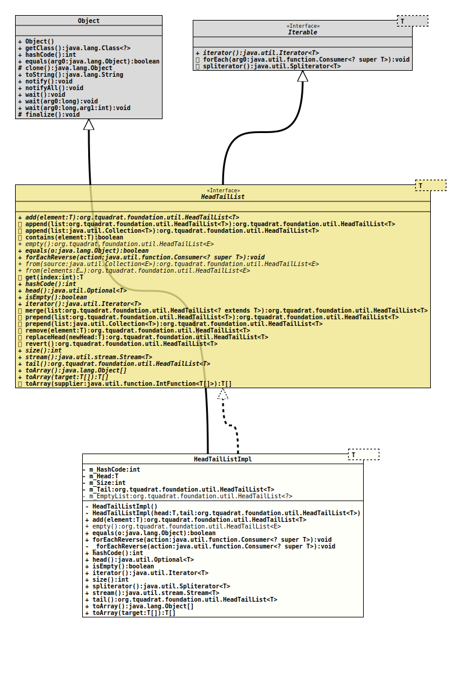

Module org.tquadrat.foundation.util
Class HeadTailListImpl<T>
java.lang.Object
org.tquadrat.foundation.util.internal.HeadTailListImpl<T>
- Type Parameters:
T- The element type of the list.
- All Implemented Interfaces:
Iterable<T>,HeadTailList<T>
@ClassVersion(sourceVersion="$Id: HeadTailListImpl.java 1060 2023-09-24 19:21:40Z tquadrat $")
@API(status=INTERNAL,
since="0.0.4")
public final class HeadTailListImpl<T>
extends Object
implements HeadTailList<T>
The implementation for the interface
HeadTailList- Author:
- Thomas Thrien (thomas.thrien@tquadrat.org)
- Version:
- $Id: HeadTailListImpl.java 1060 2023-09-24 19:21:40Z tquadrat $
- Since:
- 0.0.4
- UML Diagram
-

UML Diagram for "org.tquadrat.foundation.util.internal.HeadTailListImpl"
{kind=link}
-
Nested Class Summary
Nested ClassesModifier and TypeClassDescriptionprivate static classThe implementation of the interfaceIteratorfor instances ofHeadTailListImpl -
Field Summary
FieldsModifier and TypeFieldDescriptionprivate static final HeadTailList<?> The empty list.private final intThe hash code for this instance.private final TThe head element.private final intThe size of the list.private final HeadTailList<T> The tail list. -
Constructor Summary
ConstructorsModifierConstructorDescriptionprivateCreates the emptyHeadTailListImplinstance.privateHeadTailListImpl(T head, HeadTailList<T> tail) Creates a newHeadTailListImplinstance. -
Method Summary
Modifier and TypeMethodDescriptionfinal HeadTailList<T> Returns a new list with the given element as the head, and this list as the tail.static final <E> HeadTailList<E> empty()Returns an empty list.final booleanfinal voidforEachReverse(Consumer<? super T> action) Does the same asIterable.forEach(Consumer), but starting with last element first.final inthashCode()head()Returns the head of the list.private final voidinternalForEachReverse(Consumer<? super T> action) This is the implementation offorEachReverse(Consumer); splitting this into two methods spares the null-check on each invocation.final booleanisEmpty()Checks whether the list is empty.iterator()final intsize()Returns the size of the list.final Spliterator<T> stream()Returns aStreamthat is backed by this list.final HeadTailList<T> tail()Returns the tail of the list.final Object[]toArray()Returns the contents of this list as an array.final T[]Returns the contents of this list in the provided array.Methods inherited from class java.lang.Object
clone, finalize, getClass, notify, notifyAll, toString, wait, wait, wait
-
Field Details
-
m_HashCode
The hash code for this instance. -
m_Head
The head element. -
m_Size
The size of the list. -
m_Tail
The tail list. -
m_EmptyList
The empty list.
-
-
Constructor Details
-
HeadTailListImpl
private HeadTailListImpl()Creates the emptyHeadTailListImplinstance. -
HeadTailListImpl
Creates a newHeadTailListImplinstance.- Parameters:
head- The head element.tail- The tail list.
-
-
Method Details
-
add
Returns a new list with the given element as the head, and this list as the tail.- Specified by:
addin interfaceHeadTailList<T>- Parameters:
element- The head for the new list.- Returns:
- The new list.
-
empty
Returns an empty list.
Each call to this method will return the same instance.
- Type Parameters:
E- The element type for the list.- Returns:
- The empty list.
-
equals
- Specified by:
equalsin interfaceHeadTailList<T>- Overrides:
equalsin classObject
-
forEachReverse
Does the same asIterable.forEach(Consumer), but starting with last element first.- Specified by:
forEachReversein interfaceHeadTailList<T>- Parameters:
action- The action to perform.
-
internalForEachReverse
This is the implementation offorEachReverse(Consumer); splitting this into two methods spares the null-check on each invocation.- Parameters:
action- The action.
-
hashCode
- Specified by:
hashCodein interfaceHeadTailList<T>- Overrides:
hashCodein classObject
-
head
Returns the head of the list.
This will be empty only for the empty list.
- Specified by:
headin interfaceHeadTailList<T>- Returns:
- An instance of
Optionalthat holds the head.
-
isEmpty
Checks whether the list is empty.- Specified by:
isEmptyin interfaceHeadTailList<T>- Returns:
trueif the list is empty,falseotherwise.
-
iterator
-
size
Returns the size of the list.- Specified by:
sizein interfaceHeadTailList<T>- Returns:
- The size of the list.
-
spliterator
- Specified by:
spliteratorin interfaceIterable<T>
-
stream
Returns aStreamthat is backed by this list.- Specified by:
streamin interfaceHeadTailList<T>- Returns:
- The stream.
-
tail
Returns the tail of the list.- Specified by:
tailin interfaceHeadTailList<T>- Returns:
- The tail list.
-
toArray
Returns the contents of this list as an array.- Specified by:
toArrayin interfaceHeadTailList<T>- Returns:
- The array.
-
toArray
Returns the contents of this list in the provided array.
If the provided array is larger that the number of elements on the stack, the exceeding entries on that array remained unchanged.
- Specified by:
toArrayin interfaceHeadTailList<T>- Parameters:
target- The target array; if this array has an insufficient size, a new array will be created.- Returns:
- An array with all entries from the list; never
null. If the provided array was large enough to take all elements, it will be returned, otherwise the returned array is a new one and the provided array is unchanged.
-